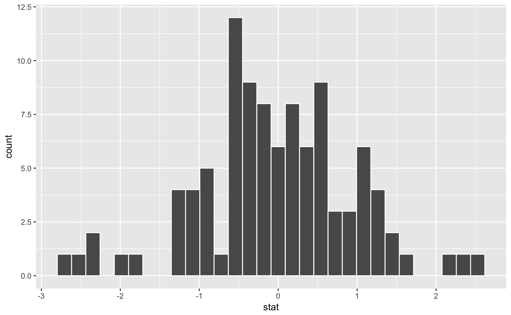
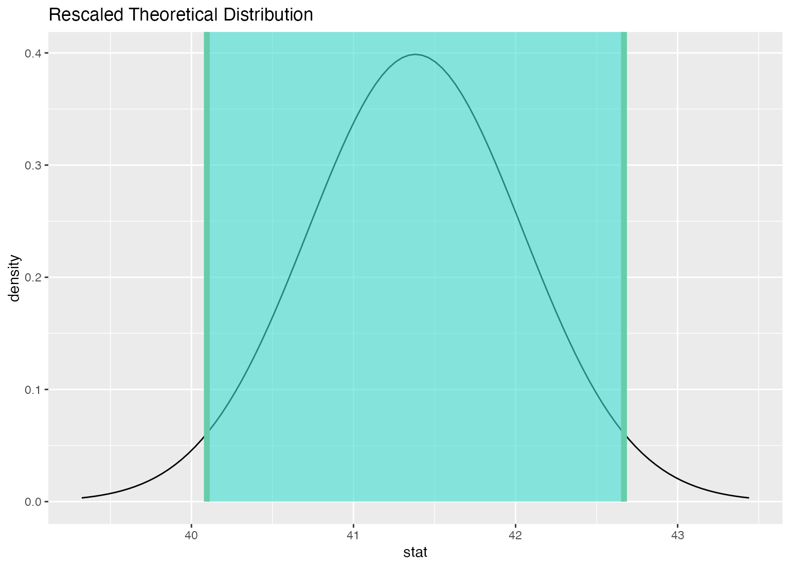

Visualize the distribution of the simulation-based inferential statistics or the theoretical distribution (or both!).
Learn more in vignette("infer").
visualize( data, bins = 15, method = "simulation", dens_color = "black", obs_stat = NULL, obs_stat_color = "red2", pvalue_fill = "pink", direction = NULL, endpoints = NULL, endpoints_color = "mediumaquamarine", ci_fill = "turquoise", ... ) visualise( data, bins = 15, method = "simulation", dens_color = "black", obs_stat = NULL, obs_stat_color = "red2", pvalue_fill = "pink", direction = NULL, endpoints = NULL, endpoints_color = "mediumaquamarine", ci_fill = "turquoise", ... )
Arguments
| data | The output from |
|---|---|
| bins | The number of bins in the histogram. |
| method | A string giving the method to display. Options are
|
| dens_color | A character or hex string specifying the color of the theoretical density curve. |
| obs_stat | A numeric value or 1x1 data frame corresponding to what the observed statistic is. Deprecated (see Details). |
| obs_stat_color | A character or hex string specifying the color of the observed statistic as a vertical line on the plot. Deprecated (see Details). |
| pvalue_fill | A character or hex string specifying the color to shade
the p-value. In previous versions of the package this was the |
| direction | A string specifying in which direction the shading should
occur. Options are |
| endpoints | A 2 element vector or a 1 x 2 data frame containing the lower and upper values to be plotted. Most useful for visualizing conference intervals. Deprecated (see Details). |
| endpoints_color | A character or hex string specifying the color of the observed statistic as a vertical line on the plot. Deprecated (see Details). |
| ci_fill | A character or hex string specifying the color to shade the confidence interval. Deprecated (see Details). |
| ... | Other arguments passed along to \ggplot2\ functions. |
Value
A ggplot object showing the simulation-based distribution as a histogram or bar graph. Also used to show the theoretical curves.
Details
In order to make visualization workflow more straightforward and
explicit visualize() now only should be used to plot statistics directly.
That is why arguments not related to this task are deprecated and will be
removed in a future release of \infer\.
To add to plot information related to p-value use shade_p_value(). To add
to plot information related to confidence interval use
shade_confidence_interval().
See also
Examples
# find a null distribution null_dist <- gss %>% # we're interested in the number of hours worked per week specify(response = hours) %>% # hypothesizing that the mean is 40 hypothesize(null = "point", mu = 40) %>% # generating data points for a null distribution generate(reps = 1000, type = "bootstrap") %>% # calculating a distribution of t test statistics calculate(stat = "t") # we can easily plot the null distribution by piping into visualize null_dist %>% visualize()# we can add layers to the plot as in ggplot, as well... # find the point estimate---mean number of hours worked per week point_estimate <- gss %>% specify(response = hours) %>% hypothesize(null = "point", mu = 40) %>% calculate(stat = "t") # find a confidence interval around the point estimate ci <- null_dist %>% get_confidence_interval(point_estimate = point_estimate, # at the 95% confidence level level = .95, # using the standard error method type = "se") # display a shading of the area beyond the p-value on the plot null_dist %>% visualize() + shade_p_value(obs_stat = point_estimate, direction = "two-sided")# to plot a theoretical null distribution, skip the generate() # step and supply `method = "theoretical"` to `visualize()` null_dist_theoretical <- gss %>% specify(response = hours) %>% hypothesize(null = "point", mu = 40) %>% calculate(stat = "t") visualize(null_dist_theoretical, method = "theoretical")#> Warning: Check to make sure the conditions have been met for the theoretical method. {infer} currently does not check these for you.# to plot both a theory-based and simulation-based null distribution, # use the simulation-based null distribution and supply # `method = "both"` to `visualize()` visualize(null_dist, method = "both")#> Warning: Check to make sure the conditions have been met for the theoretical method. {infer} currently does not check these for you.